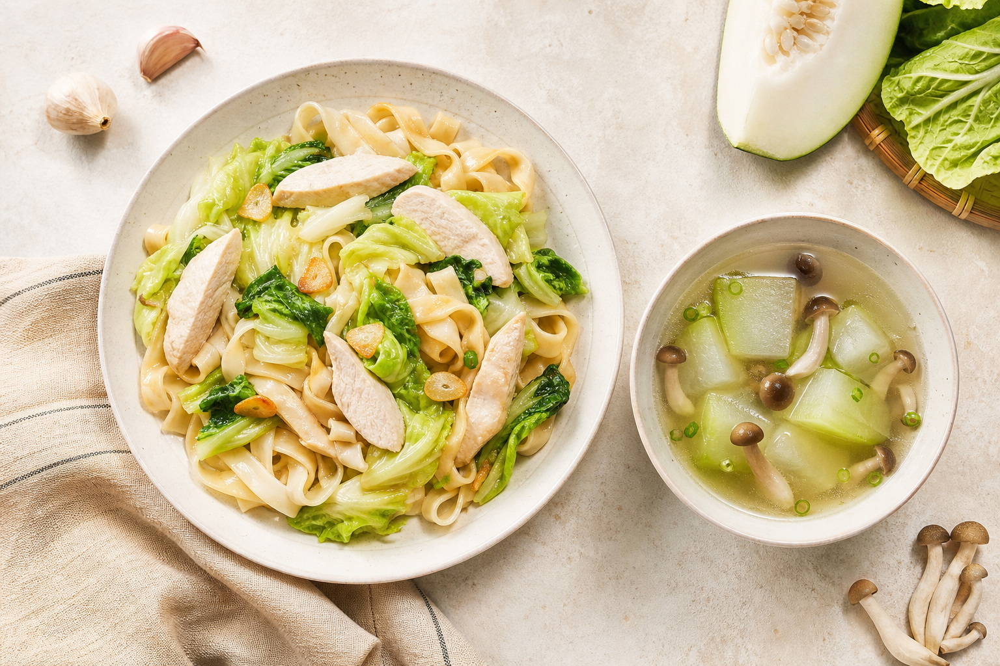

兩人份健康午餐｜一頁食譜
蒜香嫩雞白菜拌寬麵
＋冬瓜鴻禧菇清湯
2 人份
約 30 分鐘
低油・蔬菜量充足
IH 爐＋Panasonic NN-BS1700

清爽拌麵搭熱湯｜調味包減量也有味道
雞里肌200 g
寬麵2 包
荷葉白菜250 g
冬瓜350 g
鴻禧菇1 包
蒜頭6～8 瓣
冷水900 mL
調味：速拌麵醬包先用 1 包，試味後最多加至 1.5 包；可選少許鹽與白胡椒。
1
冬瓜去皮去籽，切約 1 cm 厚；鴻禧菇去根拆散。4 瓣蒜拍裂。
2
冬瓜、蒜與 900 mL 冷水入鍋。加蓋大火煮滾，轉小火、鍋蓋留縫，微滾 8～10 分鐘。
3
冬瓜接近半透明時下鴻禧菇：大火 2 分鐘，再小火 4 分鐘。最後才調味。
✓
完成：冬瓜可穿透、菇類全部熱透。冬瓜仍硬則小火每次補煮 3～5 分鐘。
1
先蒸白菜：原廠雙面烤盤平面側朝上、置上層；純蒸氣 100°C・5 分鐘，不預熱。
2
再蒸雞肉：雞里肌擦乾、不重疊，鋪 2～4 瓣蒜末；放淺型耐熱陶瓷盤，再置於上層烤盤。
主要設定純蒸氣 100°C
15 分鐘・不預熱
完成判定最厚處達 74°C
完成後靜置 3 分鐘
3
雞肉未達 74°C，每次補蒸 2 分鐘；白菜梗仍硬，每次補蒸 1 分鐘。
最後組合
- 清湯完成後加蓋保溫；另用 IH 依包裝時間煮熟寬麵並瀝乾。
- 兩包麵先拌入 1 包醬與 2～3 大匙熱湯，再加入白菜和切條雞肉。
- 試味後才決定是否加第二包醬；分成兩盤，搭配冬瓜菇湯。